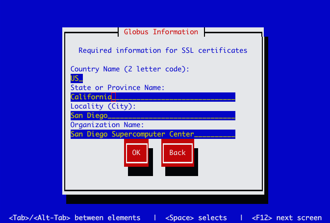
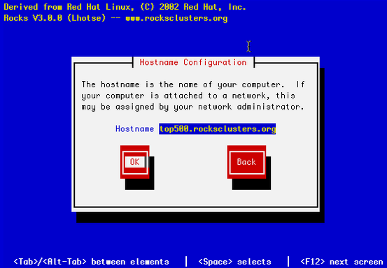

Grid Roll: Users Guide: 
| ||
|---|---|---|
| Prev | Chapter 2. Installing the Grid Roll | Next |
The Grid Roll must be installed during the Frontend installation step of your cluster (refer to section 1.2 of the Rocks usersguide). Future releases will allow the installation of the Grid Roll onto a running system.
The Grid Roll is added to a Frontend installation in exactly the same manner as the required HPC Roll. Specifically, after the HPC Roll is added the installer will once again ask if you have a Roll (see below). Select 'Yes' and insert the Grid Roll.

Once the Grid Roll is loaded the installer will continue to prompt for the standard Rocks configuration screens. The Grid Roll adds the following configuration screen to provide information to the Globus Certificate Authority. This information is used to build the Distinguished Name (DN) of you host, and user certificates.

 | You must use a Fully Qualified Domain Name (FQDN) for your Frontend. |
Globus and its openssl-based PKI tools require the hostname of you cluster Frontend to be the primary DNS fully-qualified domain name. You may not name use DNS aliases, or an abbreviated hostname. This is because all certificate checks do a reverse DNS lookup and must resolve to the correct distinguished name (DN) used to build the certificate. To insure you configure your Frontend correctly when you are presented with the hostname configuration screen (see below), be sure to enter the FQDN of your host.
